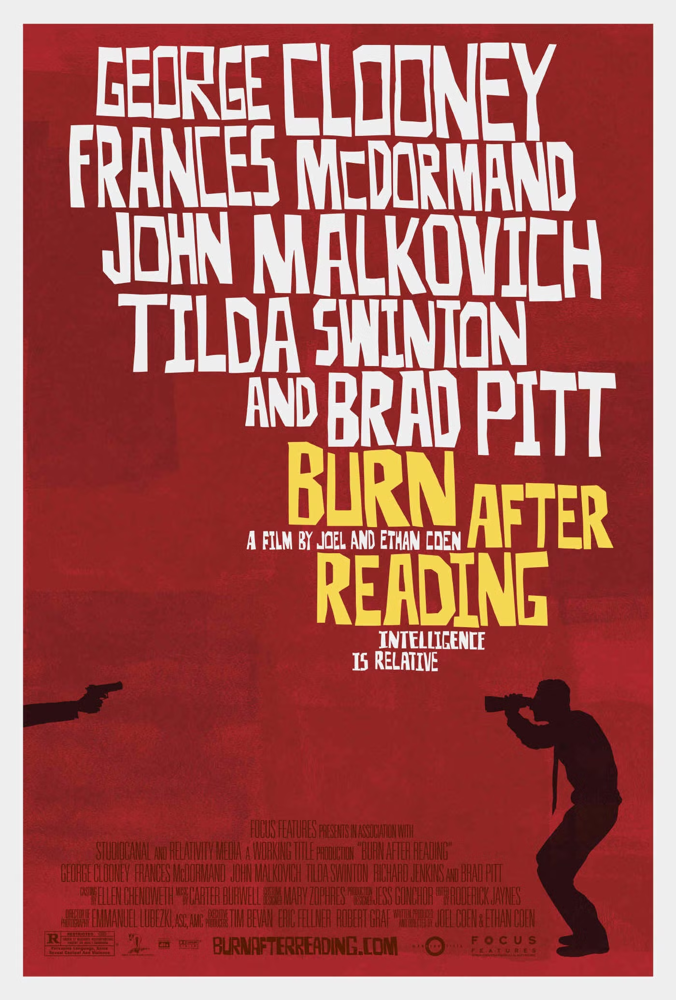

Intelligence is relative.
Focus Features presents in association with StudioCanal and Relativity Media a Working Title production.
Starring George Clooney, Frances McDormand, John Malkovich, Tilda Swinton, Richard Jenkins, and Brad Pitt.
Casting: Ellen Chenoweth
Music: Carter Burwell
Costume Design: Mary Zophres
Edited by: Roderick Jaynes
Production Design: Jess Gonchor
Director of Photography: Emmanuel Lubezki, ASC, AMC
Produced by: Tim Bevan, Eric Fellner, Robert Graf
Written and Directed by: Joel Coen & Ethan Coen
